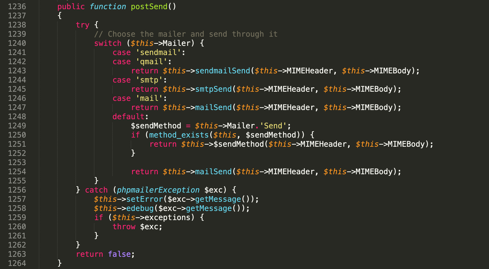

16年，PHPMailer漏洞爆出了RCE漏洞(CVE-2016-10033)，影响了众多的CMS；在进行修复之后，由于不完善出现了绕过方法(CVE-2016-10045)。17年的时候，又出现了任意文件读取漏洞(CVE-2017-5223)。在PHPMailer小于5.2.23版本时，又出现了XSS漏洞。这篇文章梳理了下PHPMailer的漏洞。
mail()函数介绍
在进行具体的漏洞分析之前，先介绍一下mail()函数。mail()函数最后是调用系统的/usr/bin/sendmail命令来发送文件的。漏洞关键点在mail()函数的第5个参数。直接来看看第5个参数的定义。
该参数可选，且可通过添加附加的命令作为发送邮件时候的配置，如-f参数设置邮件发件人。传入的参数会经过escapeshellcmd()函数过滤以阻止命令执行。整个问题转化为了找到能够绕过过滤并且能利用的命令参数。可查看sendmail MTA手册http://www.sendmail.org/~ca/email/man/sendmail.html
1 | -X logfile //将所有的log写入logfile。 |
RCE漏洞
- 影响版本
- phpmailer < 5.2.20 (CVE-2016-10033 < 5.2.18)
漏洞分析
然后再来了解一下，PHPMailer的程序调用流程。正常情况下，使用PHPMailer的案例代码如下:
1 |
|
从代码上来看，它先调用setFrom()。
setFrom()函数中，对传入的address先进行trim，然后进入validateAddress()函数，该函数将传入的address参数进行正则匹配验证邮箱的格式。然后将Subject属性赋值，添加收件人，设置msgHTML，AltBody。然后调用send()函数。
在send()函数中调用了preSend()和postSend()。来看看postSend()。

在这里面调用了mailSend()函数。
mailSend()函数中，然后调用了mailPassthru()函数。
在mailPassthru()函数中，最终调用了mail()函数。
漏洞利用
从后往前看，需要调用mail()函数的第5个参数，需要满足1)未开启safe_mode; 2)UseSendmailOptions为True。第二个条件默认满足，只需要满足第一个条件。
在mailSend()函数中，第五个参数为-f加上Sender的值。那么payload的需放在Sender中。Sender是在setFrom()函数中做初始化的，值来自address。在该函数中，会将首位的空格、\r、\n空白字符去掉。然后判断是否含有@字符。之后调用validateAddress()函数对address进行验证。
命令执行
这里的绕过的payload是aaa( -X/var/www/html/success.php )@qq.com。
任意文件读取
任意文件读取漏洞用到了上面所述的-C和-X参数。当第5个参数为a@qq.com -C/etc/passwd -X/tmp/456，加载临时配置文件/etc/passwd发送邮件，将日志信息保存在/tmp/456中。
在非ubuntu系统下，可能会存在权限问题，可加上
-OQueueDirectory=/tmp。则payload可转化为aaa( -X/var/www/html/success.php -OQueueDirectory=/tmp )@qq.com。或者使用aaa( -X./success.php -oQ/tmp )@qq.com
漏洞修复
在5.2.18中的修复方式是在添加-f参数前，对Sender进行escapeshellarg()进行过滤。
修复绕过
前面介绍过mail()函数对第5个参数本身就会进行escapeshellcmd()的过滤，这就导致了先进行escapeshellarg()后进行escapeshellcmd()，这俩对单引号的处理不同，导致单引号逃逸。关于这个的细节可以阅读https://paper.seebug.org/164/。
绕过的payload为:a'( -OQueueDirectory=/tmp -X/tmp/123.php )@qq.com
再次修复
在5.2.20版本中，添加了isShellSafe()函数。

isShellSafe()函数中先用escapeshellcmd()和escapeshellarg()对字符串进行判断，然后过滤了除@_-.以及数字字母之外的字符。
其他利用方式
当系统使用Exim4发送邮件时，Exim4的-be参数支持运行扩展模式。在这些字符串扩展中，如下内容可被利用，更多的可查看https://linux.die.net/man/8/exim
1 | ${run{<command <args>>}{<string1>}{<string2>}} // 执行<command> <args>，成功返回string1，失败返回string2 |
在Exim4中，可以使用${substr{pos}{num}{string}}从系统变量中截取想要的特殊字符。